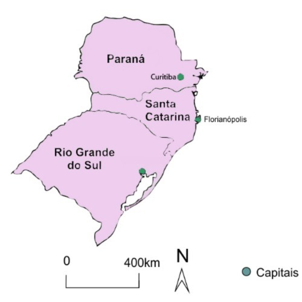

Norte
A região Norte do Brasil é composta por sete estados: Acre, Amapá, Amazonas, Pará, Rondônia, Roraima e Tocantins. É a maior região do país em extensão territorial e abriga a maior floresta tropical do mundo, a Amazônia. A economia dessa região é baseada principalmente na exploração de recursos naturais, como a extração de madeira, a mineração de ouro, ferro e outros minerais, e a produção de petróleo e gás natural na bacia de Campos. Além disso, a região também possui uma importante produção de cacau, açaí, castanha-do-pará e outras frutas. A região também é rica em cultura e tradições indígenas, que se expressam em diversas festas e rituais, como o Festival de Parintins no Amazonas e o Sairé em Santarém, no Pará. Também é famosa pela culinária, com pratos típicos como o tacacá, a maniçoba, o pato no tucupi e o açaí na tigela. Possui diversas belezas naturais, como as praias de Alter do Chão no Pará, as cachoeiras de Presidente Figueiredo no Amazonas, e a Floresta Amazônica, com seus rios, fauna e flora únicos no mundo.
Voltar para o inícioNordeste
A região Nordeste do Brasil é composta por nove estados: Alagoas, Bahia, Ceará, Maranhão, Paraíba, Pernambuco, Piauí, Rio Grande do Norte e Sergipe. É uma região rica em cultura, história, gastronomia e belezas naturais. Possui uma economia diversificada, com destaque para a agropecuária, indústria têxtil, turismo e comércio. A região é responsável por grande parte da produção nacional de frutas, como manga, mamão e abacaxi, além da produção de cana-de-açúcar, algodão e cacau. A região é rica em manifestações culturais, como o frevo e o maracatu em Pernambuco, o forró e o baião na Bahia, o bumba-meu-boi no Maranhão, o coco em Alagoas e a literatura de cordel que é popular em todo o Nordeste. A região também é famosa por suas praias, como a Praia do Forte na Bahia, Jericoacoara no Ceará e Porto de Galinhas em Pernambuco, além de cidades históricas como Salvador, Olinda e São Luís.
Voltar para o inícioCentro Oeste
A região Centro-Oeste do Brasil é composta por quatro estados: Goiás, Mato Grosso, Mato Grosso do Sul e o Distrito Federal, onde se localiza a capital do país, Brasília. É uma região geograficamente diversa, com grande parte de seu território coberto pela vegetação do cerrado, mas também possui áreas de florestas, planícies e montanhas. Sua economia é baseada principalmente na agropecuária, com destaque para a produção de soja, milho, algodão e carne bovina. Além disso, há também a exploração mineral, com a extração de minério de ferro em Mato Grosso do Sul e de ouro em Goiás.A região abriga diversas belezas naturais, como o Parque Nacional da Chapada dos Veadeiros em Goiás, o Pantanal em Mato Grosso do Sul e o Parque Nacional da Serra da Bodoquena em Mato Grosso do Sul. Também possui uma rica cultura popular, com festas folclóricas como o "Divino Espírito Santo" em Goiás e a "Festa de São João" em Mato Grosso.
Voltar para o inícioSudeste
A região Sudeste do Brasil é composta por quatro estados: São Paulo, Rio de Janeiro, Minas Gerais e Espírito Santo. É a região mais populosa do país e concentra grande parte da produção industrial e financeira. Sua economia é diversificada, com destaque para a indústria, comércio, serviços, agricultura e turismo. São Paulo é o estado mais industrializado do país e abriga diversas empresas nacionais e internacionais. Minas Gerais é conhecido por sua produção de minério de ferro, café e leite, enquanto o Rio de Janeiro é um importante centro turístico e financeiro. O Espírito Santo se destaca pela produção de celulose, papel e rochas ornamentais. A região é rica em cultura e história, com diversas cidades históricas, como Ouro Preto em Minas Gerais, Paraty no Rio de Janeiro e São Paulo. O carnaval do Rio de Janeiro é uma das maiores festas populares do mundo, enquanto o carnaval de São Paulo tem ganhado destaque nos últimos anos. Também possui diversas belezas naturais, como as praias de Ilhabela em São Paulo, o Parque Nacional da Serra dos Órgãos no Rio de Janeiro e o Parque Nacional da Serra da Canastra em Minas Gerais.
Voltar para o inícioSul
A região Sul do Brasil é composta por três estados: Paraná, Santa Catarina e Rio Grande do Sul. É uma região conhecida por sua diversidade cultural, economia forte e belezas naturais. A economia é diversificada, com destaque para a indústria, agricultura, comércio e turismo. O Rio Grande do Sul é um importante produtor de vinhos, arroz e soja, além de possuir um forte setor calçadista. Santa Catarina é conhecida por sua produção têxtil, de cerâmica e de artigos de couro, enquanto o Paraná é um importante produtor de soja, milho, trigo e carne. Rica em cultura, com forte influência dos imigrantes europeus, que se manifesta na arquitetura, na culinária e nas festas populares, como a Oktoberfest em Santa Catarina e o Festival de Cinema de Gramado no Rio Grande do Sul. A região também possui diversas belezas naturais, como as praias de Florianópolis em Santa Catarina, as Cataratas do Iguaçu no Paraná e o Parque Nacional dos Aparados da Serra no Rio Grande do Sul.
Voltar para o início